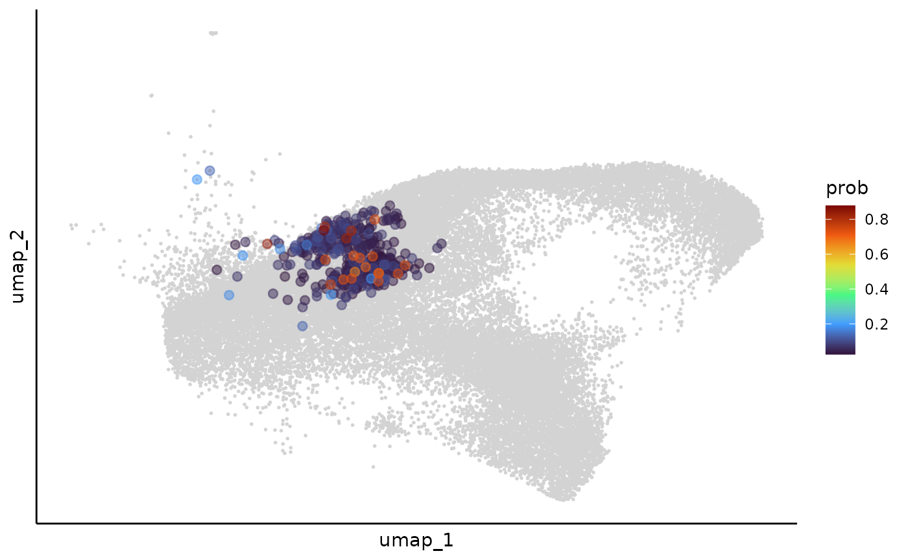
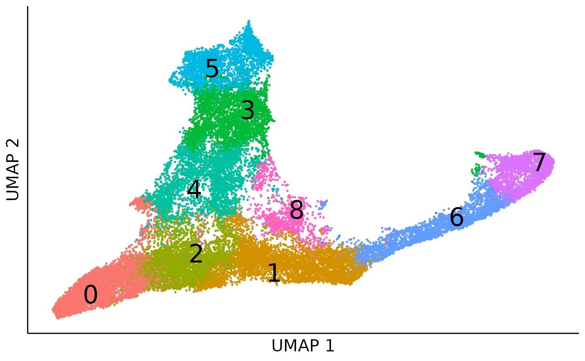
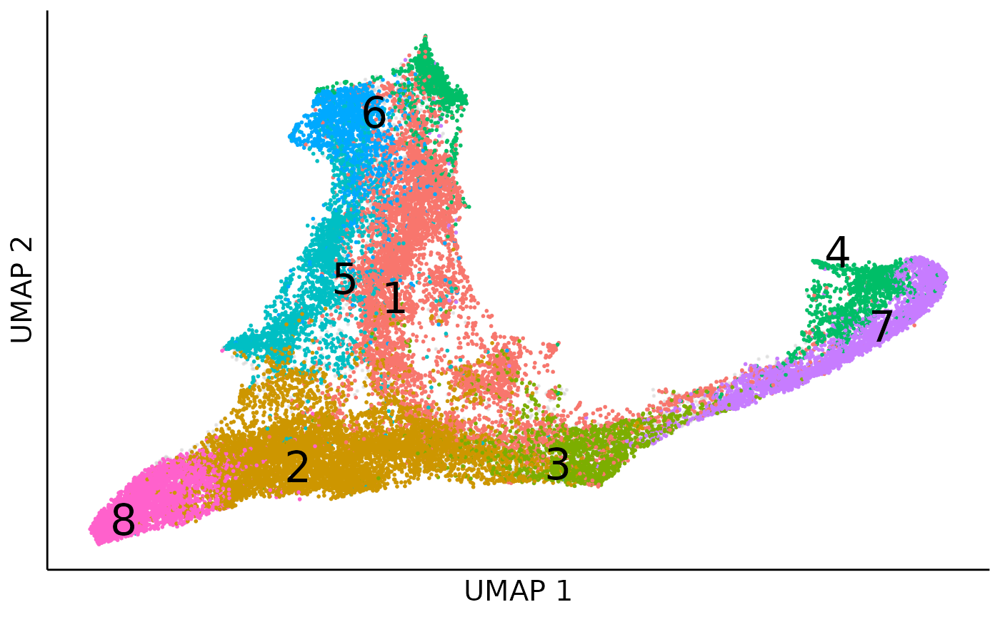

An R Markdown document converted from "./vignettes/Clonotrace.ipynb"
Clonotrace.Rmd
options(future.globals.maxSize = 4 * 1024^3)## Loading required package: SeuratObject## Loading required package: sp##
## Attaching package: 'SeuratObject'## The following object is masked from 'package:base':
##
## intersect##
## Attaching package: 'dplyr'## The following objects are masked from 'package:stats':
##
## filter, lag## The following objects are masked from 'package:base':
##
## intersect, setdiff, setequal, union
library(Clonotrace)data
We first read in data. The demo data is from a public in vitro longitudinal experiment to monitor the hematopoiesis (https://www.science.org/doi/10.1126/science.aaw3381). You can download the demo data from: https://upenn.box.com/s/9bxv50lueelrrf5zv4ked20dlkalrtir
seurat_object = readRDS("../../hematopoiesis.rds")
pca = seurat_object@reductions$pca@cell.embeddings
umap = as.data.frame(seurat_object@reductions$umap@cell.embeddings)
cell_meta = seurat_object@meta.dataWithin this data, there are 34782 cells are sampled at 3 time points.
table(cell_meta$Time.point)##
## 2 4 6
## 3407 11101 20274This data has a simple cell type compistion with only 3 cell types:
cell_type_umap = dimplot(embedding = umap,annot = cell_meta,color_by = "Cell.type.annotation",size = 0.1,label_size = 5)+
NoLegend()+
theme(axis.text = element_blank(),
axis.ticks = element_blank())+
xlab("UMAP 1")+ylab("UMAP 2")
cell_type_umapFor a higher resolustion in the downstream analysis, we further cluster cells into 9 cell clusters.
cell_cluster_umap = dimplot(embedding = umap,annot = cell_meta,color_by = "cluster",size = 0.1,label_size = 5)+
NoLegend()+
theme(axis.text = element_blank(),
axis.ticks = element_blank())+
xlab("UMAP 1")+ylab("UMAP 2")
cell_cluster_umapclone label spreading
We first build a cell kNN graph based within the PCA space:
cell_knn = embedding2knn(embedding = as.matrix(pca),k = 30,mode = "connectivity",if_self = FALSE)
cell_knn = compute_transition(cell_knn)Here we define a clone as a population of cells which share the same lineage barcode at the same time point. Based on this definition there are 8108 clones in total. 802 out of them expanded over 10 cells.
clone_size = cell_meta %>% group_by(clone) %>% summarise(count = n())
expanded_clones = clone_size %>% filter(count >=10)
clone_size_hist = ggplot(clone_size)+
geom_histogram(aes(x = sqrt(count)),binwidth = 1,color = "black",fill = "steelblue")+
geom_vline(xintercept = sqrt(10),linetype = "dashed",color = "coral",linewidth = 1)+
theme_classic()+
xlab("sqrt(clone size)")+
ylab("clone count")
clone_size_histThen we could spread the clone label in the cell graph to smooth the cell density in those expanding clones. There is a bootstrap during this process to filter out propogation with high deviance, usually in regions with high density of lowly expanded or unexpanded clones. So it’s better to run this in parallel.
cell_clone = data.frame(cell = rownames(cell_meta),clone = cell_meta[,"clone"]) %>%
mutate(clone = if_else(clone %in% expanded_clones$clone, clone, NA_character_))
start = Sys.time()
plan(multisession,workers = 8)
clone_labels = label_spreading_bootstrap(adj = cell_knn,labels = cell_clone$clone,
alpha = 0.6, sample_rate = 0.8,sample_n = 48)
end = Sys.time()
print(end-start)## Time difference of 12.64555 mins
cell_clone_prob_raw = clone_labels[[1]]
deviance = clone_labels[[2]]
deviance_hist = ggplot()+
geom_histogram(aes(x = deviance),fill = "coral",color = "black",binwidth = 0.02)+
geom_vline(xintercept = 0.3,linetype = "dashed")+
theme_classic()+
ylab("cell count")
deviance_histWe can visualize the deviance of clone label spreading in each cell via cell UMAP, and here we use the 0.3 as the upper bound threshold for deviance. Cells with high deviance are enriched in undifferentiated cells, which due to they haven’t proliferated enough to expand their clones.
cell_meta$deviance = deviance
deviance_umap = dimplot(umap,annot = cell_meta %>% filter(deviance > 0.3),color_by = "deviance",label = FALSE,size = 0.1)+
scale_color_viridis_c(name = "deviance",option = "plasma")+
theme_classic()+
theme(axis.text = element_blank(),
axis.ticks = element_blank())+
ggtitle("Cells with high deviance")
deviance_umapThen we filter out cells with high deviance, and sparsify the cell-to-clone probablity by keeping top 90% mass
cell_clone_prob = cell_clone_prob_raw[deviance < 0.3,]
cell_clone_prob = cell_clone_prob/rowSums(cell_clone_prob)
cell_clone_prob = mat_sparsify(mat = cell_clone_prob,row_mass = 0.9,col_mass = 0.9)
cell_clone_prob = cell_clone_prob/rowSums(cell_clone_prob)
cell_clone_prob = Matrix(cell_clone_prob, sparse = TRUE)We can use an example to show how the cell clone assignment is smoothed during this process:
example_clone = "Lineage-1193-6"
clone_example_umap_raw = dimplot(umap,annot = cell_meta %>% filter(clone == example_clone) %>% mutate(group = "1"),
color_by = "group",label = FALSE,size = 2)+
theme_classic()+
NoLegend()+
theme(axis.text = element_blank(),
axis.ticks = element_blank())
clone_example_umap_raw
cell_meta$prob = NA
cell_meta[rownames(cell_clone_prob),]$prob = cell_clone_prob[,example_clone]
umap$prob = cell_meta$prob
clone_example_umap_smooth = ggplot(mapping = aes(x= umap_1,y = umap_2))+
geom_point(data = umap,color = "lightgrey",size = 0.1)+
geom_point(data = umap %>% filter(prob > 0.025) %>% arrange(prob),
aes(color = prob),size = 2,alpha = 0.5)+
scale_color_viridis_c(name = "prob",option = "turbo")+
theme_classic()+
theme(axis.text = element_blank(),
axis.ticks = element_blank())
clone_example_umap_smooth = ggrastr::rasterize(clone_example_umap_smooth,layers='Point', dpi=300)
clone_example_umap_smooth
Clonewise transcriptomic distance
After we smooth the cell density for each expanded clone over the cell transcriptomic embedding, we can measure their cell distribution difference via optimal transportation distance.
We provide two methods for this, the first one calculate the exact
optimal transportation distance, and the second one is a faster
approximation, but less accurate. You can switch the modes by the
exact parameter in the clone_disance
function.
This step is time and memory consuming, which can take hours even with the approximation. We strongly recommend to put this step in a server or cluster and run it with multiple cores. (As a reference, the approximation method takes 40 minutes to run on the HPC paralleled with 4 cores using 8 Gb RAM).
Here for time efficiency, we can use the pre-computed clone-wise distance for downstream applicaitons.
file_path <- system.file("extdata", "clone_graph_dis.rds", package = "Clonotrace")
clone_dis = readRDS(file_path)clone embedding visualization
We first cluster clones using leiden algorithm and visualize the clone community in the UMAP.
set.seed(1230)
clone_cluster = leiden_dis(dismat = clone_dis,k = 20,resolution = 0.5,if_umap = TRUE)## Found more than one class "dist" in cache; using the first, from namespace 'spam'## Also defined by 'BiocGenerics'
clone_cluster_center = clone_cluster %>% group_by(cluster) %>% summarise_all(median)
clone_cluster$mass = colSums(cell_clone_prob)
clone_leiden_umap = ggplot(mapping = aes(x = umap1,y = umap2))+
geom_point(data = clone_cluster,aes(fill = cluster,size = log2(mass)),pch=21,color = "black",alpha = 0.75)+
ggrepel::geom_label_repel(data = clone_cluster_center,aes(label = cluster),size = 8)+
theme_bw()+
theme(axis.text = element_blank(),
axis.ticks = element_blank(),
panel.grid.major = element_blank(),
panel.grid.minor = element_blank())+
guides(fill = guide_legend(override.aes = list(size=5)))+
guides(fill = "none")+
theme(legend.position = "bottom")+
xlab("UMAP 1")+ylab("UMAP 2")
clone_leiden_umapWe can also visualize the clone embedding in other low dimension reduction like diffusion map:
clone_leiden_dm <- diffusionMap::diffuse(clone_dis,maxdim = 30)## Performing eigendecomposition
## Computing Diffusion Coordinates
## Used default value: 11 dimensions
## Elapsed time: 2.063 seconds
clone_leiden_dm_coord = as.data.frame(clone_leiden_dm$X)
colnames(clone_leiden_dm_coord) = paste("dm",1:ncol(clone_leiden_dm_coord),sep = "")
rownames(clone_leiden_dm_coord) = rownames(clone_cluster)
dm_cluster_center = clone_leiden_dm_coord %>% group_by(clone_cluster$cluster) %>% summarise_all(median)
colnames(dm_cluster_center)[1] = "cluster"
clone_leiden_diffmap = ggplot(mapping = aes(x = dm1,y = dm2))+
geom_point(data = clone_leiden_dm_coord,aes(fill = clone_cluster$cluster,size = log2(clone_cluster$mass)),
pch=21,color = "black",alpha = 0.75)+
ggrepel::geom_label_repel(data = dm_cluster_center,aes(label = cluster),size = 8)+
theme_bw()+
theme(axis.text = element_blank(), # Remove axis numbers (labels)
axis.ticks = element_blank(),
panel.grid.major = element_blank(),
panel.grid.minor = element_blank())+
guides(fill = "none",size = guide_legend(title = "log2(mass)"))+
theme(legend.position = "bottom")+
xlab("dm 1")+ylab("dm 2")
clone_leiden_diffmapDiffusion map is good to layout continous movement of clones over time.
clone_cluster = clone_cluster %>% mutate(clone = rownames(clone_cluster)) %>%
mutate(lineage = substr(clone,start = 1,stop = nchar(clone)-2),
time = substr(clone,start = nchar(clone),stop = nchar(clone))) %>%
mutate(time = paste("day",time,sep = ""))
clone_link = long2wide(clone_cluster %>% dplyr::select(lineage,time,clone),
row_names_from = "lineage",
col_names_from = "time",
values_from = "clone",
symmetric = FALSE)
clone_link = na.omit(clone_link)
clone_link_coord = cbind(clone_link,
clone_leiden_dm_coord[clone_link$start,c("dm1","dm2")],
clone_leiden_dm_coord[clone_link$end,c("dm1","dm2")],
clone_cluster[clone_link$start,"cluster"],
clone_cluster[clone_link$end,"cluster"])
colnames(clone_link_coord) = c("start","end","xdm1","xdm2","ydm1","ydm2","x_cluster","y_cluster")
sub_annot = clone_cluster %>% filter(lineage %in% rownames(clone_link_coord))
sub_dm_coord = clone_leiden_dm_coord[rownames(sub_annot),]
clone_leiden_diffmap_arrow = ggplot()+
geom_point(data = clone_leiden_dm_coord,aes(x = dm1,y = dm2),size = 0.2,color = "lightgrey")+
geom_point(data = sub_dm_coord,aes(x = dm1,y = dm2,fill = sub_annot$time,size = log2(sub_annot$mass)),shape = 21)+
geom_segment(data = clone_link_coord,aes(x = xdm1,y = xdm2,xend = ydm1,yend = ydm2),
arrow = arrow(length = unit(0.03, "npc")),linewidth = 0.25,alpha = 0.75)+
scale_fill_viridis_d(name = "time")+
theme_bw()+
theme(axis.text = element_blank(), # Remove axis numbers (labels)
axis.ticks = element_blank(),
panel.grid.major = element_blank(),
panel.grid.minor = element_blank())+
guides(fill = guide_legend(override.aes = list(size=5)),
size = guide_legend(title = "log2(mass)"))
clone_leiden_diffmap_arrowprofile projection in cell embedding
After we cluster the clones into profiles, with the cell clone probabilty, we can also map cells to profiles:
clone_profile = clone_cluster %>% dplyr::select(clone,cluster) %>% mutate(flag = 1)
clone_profile = long2sparse(long = clone_profile,row_names_from = "clone",col_names_from = "cluster",values_from = "flag")
cell_profile_prob = cell_clone_prob %*% clone_profile[colnames(cell_clone_prob),]
rownames(cell_profile_prob) = rownames(cell_clone_prob)For cells with profile probability higher than 0.5, we assign it with a profile label:
cell_meta$profile = NA
cell_meta[rownames(cell_profile_prob),]$profile = apply(cell_profile_prob,1,function(x){
if(max(x) > 0.5){
return(which(x == max(x))[1])
}
else{
return(NA)
}
})
cell_meta = cell_meta %>% mutate(profile = as.factor(profile))
cell_meta$profile_prob = NA
cell_meta[rownames(cell_profile_prob),]$profile_prob = apply(cell_profile_prob,1,max)Then we can visualize how profile flow over the cell embedding:
cell_profile_umap = dimplot(embedding = umap,annot = cell_meta,color_by = "profile",
size = 0.1,alpha_by = "profile_prob",label = TRUE)+
theme(axis.text = element_blank(),
axis.ticks = element_blank())+
xlab("UMAP 1")+ylab("UMAP 2")+
guides(alpha = "none",color = guide_legend(override.aes = list(size=5)))
cell_profile_umapObvisouly, profile 5 and 6 monopotently differentiate to monocytes and profile 3 and 7 monopotently differentiate to netriphil, while profile 1 and 4 denote the bipotent differenitation.
Clone level pseudotime
We first generate the clone level pseudotime by diffusion pseudotime in the clone embedding. Here we use the clone distance projection in the MDS space as the clone embedding.
## initial value 6.673968
## iter 5 value 3.757695
## iter 10 value 2.922664
## iter 15 value 2.544110
## iter 20 value 2.367482
## iter 25 value 2.291132
## iter 30 value 2.251516
## iter 35 value 2.225022
## iter 40 value 2.207040
## final value 2.194391
## converged
clone_embedding = clone_mds$points
colnames(clone_embedding) = paste("mds",1:ncol(clone_embedding),sep = "_")This step is kind slow, here we also read a pre-computed MDS embedding for the downstream analysis:
file_path <- system.file("extdata", "clone_mds.tsv", package = "Clonotrace")
clone_embedding = read.table(file_path,sep = "\t",header = TRUE)Here we choose the cell cluster 0 as the starting cluster for
diffusion pseudotime. The clone_dpt function would
automatically choose the clone which has the highest enrichment in this
starting cluster to be the root of diffusion pseudotime.
clone_t = clone_dpt(clone_embedding = clone_embedding,cell_meta = cell_meta,
clone_col = "clone",cluster_col = "cluster",start_cluster = "0")
clone_cluster$dpt = clone_tWe can then visualize the clone level pseudotime in the diffusion map:
clone_dpt_diffmap = ggplot(mapping = aes(x = dm1,y = dm2))+
geom_point(data = clone_leiden_dm_coord,aes(fill = clone_cluster$dpt,size = log2(clone_cluster$mass)),
pch=21,color = "black",alpha = 0.75)+
theme_bw()+
theme(axis.text = element_blank(), # Remove axis numbers (labels)
axis.ticks = element_blank(),
panel.grid.major = element_blank(),
panel.grid.minor = element_blank())+
guides(fill = guide_legend(override.aes = list(size=5)))+
scale_fill_viridis_c(name = "clone t")+
guides(size = "none")+
theme(legend.position = "bottom")+
xlab("dm 1")+ylab("dm 2")
clone_dpt_diffmapThen we can smooth the clone level pseudotime over the cell embedding by multiplying the clone pseudotime to cell clone probability. The pseudotime inference is necessary for the fate driving gene detection in the downstream analysis.
cell_meta$cell_t = NA
cell_meta[rownames(cell_clone_prob),]$cell_t = cell_clone_prob[,clone_cluster$clone] %*% clone_cluster$dpt
cell_dpt_umap = dimplot(embedding = umap,annot = cell_meta,color_by = "cell_t",
size = 0.1,alpha_by = NULL,label = FALSE)+
theme(axis.text = element_blank(),
axis.ticks = element_blank())+
xlab("UMAP 1")+ylab("UMAP 2")+
scale_color_viridis_c(name = "cell t")
cell_dpt_umapclone weighted cell embedding (optional)
By integrating information from both the clone embedding and the cell embedding, we developed a new visualization method called clone-weighted cell embedding. In this representation, even if two cells are close in the transcriptomic (cell) embedding, they will be pulled apart in the clone-weighted embedding if their corresponding clones are distant in clone space. This embedding can better illustrate the clone level heterogeneity.
cell_k = 30
clone_k = 15
cell_embedding = pca[rownames(cell_clone_prob),]
plan(multisession, workers = 8)
coembed_dis = cell_clone_coembed(cell_embedding,clone_embedding)This function cell_clone_coembed would return a sparse
distance matrix, which denotes a weighted kNN network between cells. We
can project this kNN network to UMAP for visulization. This step
requires a python script.
# set you python path
library(reticulate)## Warning: package 'reticulate' was built under R version 4.2.1
use_python("~/softwares/anaconda3/envs/py3.8/bin/python")
script_path <- system.file("py", "embedding_from_kNN.py", package = "Clonotrace")
source_python(script_path)
source_python(script_path)
cell_coembed_umap = umap_from_knn(coembed_dis,n_neighbors = 10,seed = 512)
coembed_umap_cluster = dimplot(embedding = cell_coembed_umap,annot = cell_meta,alpha_by = NULL,label_size = 8,
color_by = "cluster",size = 0.1,alpha = 1)+
theme(axis.text = element_blank(), # Remove axis numbers (labels)
axis.ticks = element_blank())+
xlab("UMAP 1")+ylab("UMAP 2")+
NoLegend()
coembed_umap_cluster
Obviously, there appear two boundaries within the two branchs for monocytes (cluster 4, 3, 5) and neutriphils (cluster 1, 6, 7), which denote the clone level heterogenity. Once we colored cells by the profile identity, we can see the two boundaries seperate the bipoent and unipotent profiles.
coembed_umap_profile = dimplot(embedding = cell_coembed_umap,annot = cell_meta,alpha_by = NULL,label_size = 8,
color_by = "profile",size = 0.1,alpha = 1)+
theme(axis.text = element_blank(), # Remove axis numbers (labels)
axis.ticks = element_blank())+
xlab("UMAP 1")+ylab("UMAP 2")+
NoLegend()
coembed_umap_profile
profile enrichment in each cluster
In the dowsntream analysis we will focus on the early bipotent profiles (profile) and detect early fate-associated genes. To achieve this goal we first do an enrichment test between profiles and clusters to show in which cluster profile 1 has significant high density. And then within the target cluster, we compare the gene expression between profile 1 and other profiles to identify early fate-associated genes.
We first do the cell cluster profile enrichment using permutation test:
enrich = cluster_profile_enrich(cell_profile_prob,cell_meta[rownames(cell_profile_prob),"cluster"],permute_n = 1000)We can then visualize the enrichment result using a heatmap:
mass_long = wide2long(enrich[[1]])
mass_long = mass_long %>% mutate(i = rownames(enrich[[1]])[i],
j = colnames(enrich[[1]])[j])
colnames(mass_long) = c("cluster","profile","mass")
mass_long = mass_long %>% group_by(cluster) %>% mutate(freq = mass/sum(mass))
mass_long$pvalue = c(t(enrich[[2]]))
mass_long$signif = "ns"
mass_long$signif[mass_long$pvalue< 0.05] = "*"
mass_long$signif[mass_long$pvalue< 0.01] = "**"
mass_long$signif[mass_long$pvalue< 0.001] = "***"
cell_type_profile_enrich_heatmap = ggplot(mass_long,aes(x = cluster,y = profile))+
geom_tile(aes(fill = freq),color = "black")+
scale_fill_viridis_c(option = "turbo")+
geom_text(data = mass_long %>% filter(signif != "ns"),aes(label = signif),size = 10)+
theme_classic()+
xlab("cell cluster")+
ylab("clone profile")
cell_type_profile_enrich_heatmapFrom the heatmap we can see that our target profile 1 is enriched in 4 cell clusters, including 1, 3, 4 and 8, within which cluster 1 and 4 are at early differentiation stage. Here, as an example, we will identify genes differentially expressed in profile 1 in cluter 4.
profile DEG within clusters
exprs = seurat_object@assays$RNA$data
start = Sys.time()
DEG_1_4 = profile_cluster_DEG(profile = "1",cluster = "4",exprs = exprs,cell_meta = cell_meta,cell_profile_prob = cell_profile_prob)
end = Sys.time()
print(end - start)## Time difference of 3.211435 mins## [1] 2209In total we identified 2165 genes which are differentially expressed in profile 1 in cluster 4.
Here we can take a look at the top 10 genes with the largest effect size.
## stat pval mean_diff cohen pcali padj
## Dmkn 402.8053 1.964458e-157 2.852543 1.2481938 0 0
## Elane 334.0937 5.498196e-133 3.274804 1.1583383 0 0
## H2afy 293.6286 3.410286e-118 -6.640054 -1.0967736 0 0
## Lcn2 372.0014 1.416317e-146 1.686368 1.0552461 0 0
## Ly6a 286.7642 1.181382e-115 -2.774436 -1.0669486 0 0
## Mpo 225.6353 1.228477e-92 1.283180 0.9665669 0 0
## Olfm1 254.4594 1.396541e-103 -1.220302 -0.9769773 0 0
## Prtn3 263.7946 4.321899e-107 2.336053 1.0213135 0 0
## S100a8 336.7555 5.993067e-134 9.997585 0.9618319 0 0
## Wfdc21 596.7888 2.620715e-222 2.947664 1.3916409 0 0We can take Dmkn as an example to show how the linear
regression model fits for the profile 1 and other profiles in cluster 4
along pseudotime:
test_object = DEG_1_4
null_fit = test_object$design_null %*% test_object$coef[3:4,]
full_fit = test_object$design_null %*% test_object$coef[1:2,]
rownames(null_fit) = rownames(full_fit) = test_object$cell
example_gene = "Dmkn"
cell_meta$exprs = exprs[example_gene,rownames(cell_meta)]
cell_meta$null_exprs = NA
cell_meta[test_object$cell,]$null_exprs = null_fit[,example_gene]
cell_meta$full_exprs = NA
cell_meta[test_object$cell,]$full_exprs = full_fit[,example_gene]
gene_fit_cluster = ggplot(cell_meta[test_object$cell,])+
geom_point(aes(x = cell_t,y = exprs,fill = cell_profile_prob[test_object$cell,"1"]),size = 2,shape = 21,color = "black")+
geom_line(aes(x = cell_t,y = null_exprs),color = "steelblue",linewidth = 1.5)+
geom_line(aes(x = cell_t,y = full_exprs),color = "coral",linewidth = 1.5)+
scale_fill_gradient2(name = "profile 1",low = "steelblue",mid = "whitesmoke",high = "coral",midpoint = 0.5,limit = c(0,1))+
theme_classic()+
xlab("pseudotime")+ylab(paste(example_gene,"exprs",sep = " "))
gene_fit_clusterWe can further visualize the expression for Dmkn over
the cell UMAP:
feature_scatter = dimplot(embedding = umap,annot = t(exprs),color_by = example_gene,label = FALSE,size = 0.1)+
scale_color_viridis_c(name = "",option = "plasma")+
theme(axis.text = element_blank(), # Remove axis numbers (labels)
axis.ticks = element_blank(),
plot.title = element_text(hjust = 0.5),
legend.position = "right")+
ggtitle(example_gene)+
xlab("UMAP 1")+ylab("UMAP 2")
feature_scatter